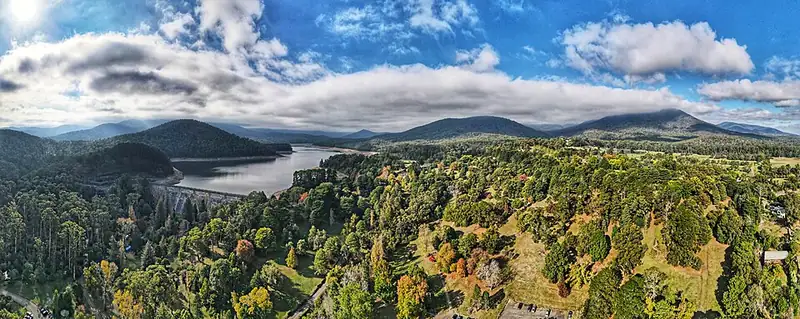

Maroondah Reservoir Park, Healesville
Maroondah Reservoir Park is a park in Healesville, in the Yarra Ranges Shire Council area, good for all ages. Maroondah Hwy/Wallace Pde (bus) is a 14-minute walk away and the nearest public toilet is about 87 m away. Opening hours: Maroondah Reservoir Park Park Open Hours – Maroondah Reservoir Park Park Open Hours Maroondah Reservoir Park Badger Weir Donnellys Weir 8am to 8pm – Early October to Early April (Start of Daylight Savings Time to End of Daylight Savings Time) 8am to 6pm – Early April (End of Daylight Savings Time) t.


Quick facts
- Toilets
- 87 m away, accessible
- Public transport
- Maroondah Hwy/Wallace Pde, bus (routes 685), 14 min walk
Details
- Opening hours
- Maroondah Reservoir Park Park Open Hours – Maroondah Reservoir Park Park Open Hours Maroondah Reservoir Park Badger Weir Donnellys Weir 8am to 8pm – Early October to Early April (Start of Daylight Savings Time to End of Daylight Savings Time) 8am to 6pm – Early April (End of Daylight Savings Time) t (Parks Victoria)
- Food
- BYO allowed (Parks Victoria)
- Good to know
- Six rotundas, one shelter and six gas or electric barbecues; Spillway waterfall flows only when the dam overflows, once or twice a year; Walk the circular track to avoid the Rose Steps (Parks Victoria)
Questions parents ask
- Where is Maroondah Reservoir Park?
- Maroondah Reservoir Park is in Healesville, Victoria.
- Is Maroondah Reservoir Park free?
- Yes. It is a public park, free to visit.
- Are there toilets at Maroondah Reservoir Park?
- The nearest public toilet is about 87 m away.
- How do I get to Maroondah Reservoir Park by public transport?
- The closest stop is Maroondah Hwy/Wallace Pde (routes 685), a 14-minute walk.
Nearby places
- Healesville G157 Bushland Reserve
Park · HealesvilleFreeBus 7 min walk
- Wattles Park
Park · HealesvilleFreeBus 3 min walk
- Allmoto Cafe
Cafe or restaurant · HealesvilleToilet nearbyBus 3 min walk
- Eastend Fish n Chips
Cafe or restaurant · HealesvilleToilet nearbyBus 2 min walk
- Playground at Queens Park
Playground · HealesvilleToilet nearbyFreeBus 3 min walk
- Healesville Walk Shopping Centre
Shopping centre · HealesvilleToilet nearbyBus 3 min walk
- Skate park at McKenzie Reserve
Skate, BMX or pump track · Yarra GlenToilet nearbyFreeBus 4 min walk
- Yarra Junction public library
Library · Yarra JunctionToilet nearbyFreeBus 1 min walk